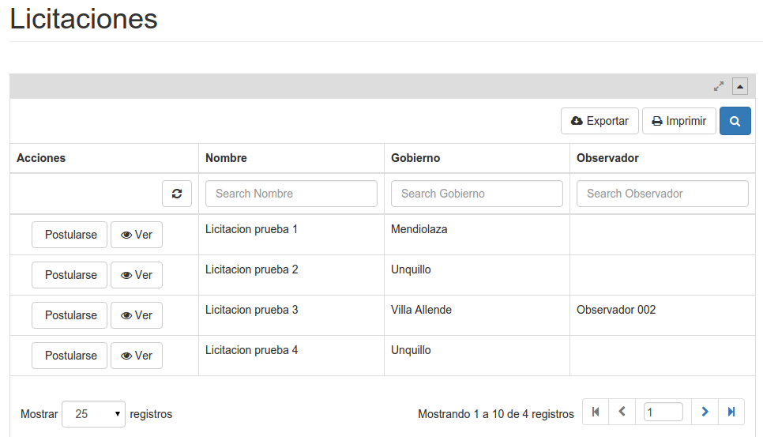
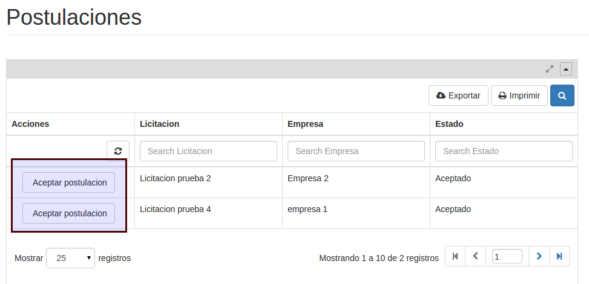
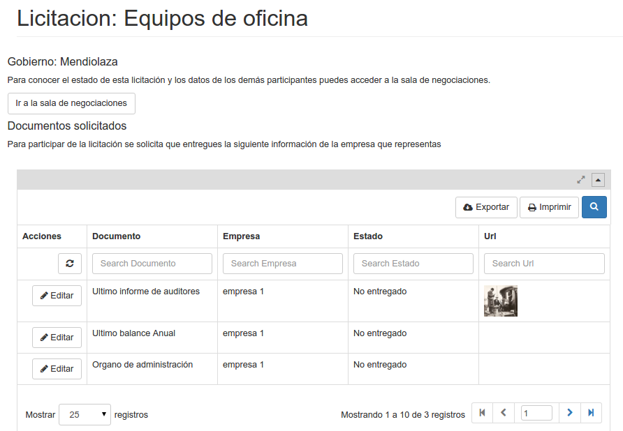

Postulacion de la empresa¶
Luego de ser aceptado en el sistema, el usuario de la empresa accederá a la lista de licitaciones vigentes de la plataforma pudiendo postularse a cualquier de ellas.
En la pantalla que sigue el usuario en representación del gobierno podrá verse al nuevo postulante.
Una vez aceptado por el gobierno la empresa podrá procesar la postulacion. Esto incluye subir los archivos solicitados e ingresar a la sala de negociaciones paraconversar con las demas empresas participantes, los representantes del gobierno y el observador designado.
En la sala de negociaciones cada empresa dispondra de la lista de todos los archivos liberados por todos los participantes. Además una sala de chat para debatir, consultar o proponer.